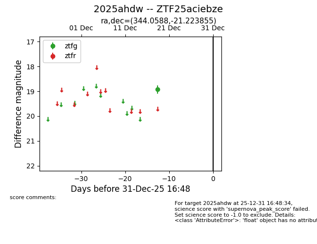
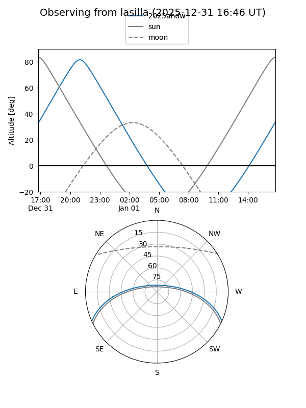
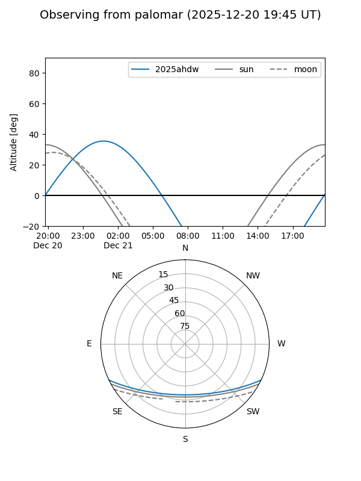

2025ahdw
Target 2025ahdw at 2025-12-31 16:59
Aliases and brokers:
FINK:
Lasair:
ALeRCE:
TNS:
YSE:
alt names
ZTF25aciebze (ztf,fink_ztf)
2025ahdw (tns,yse)
Coordinates:
equatorial (ra, dec) = 344.0588,-21.22386
equatorial (HMS+DMS) = 22:56:14.12,-21:13:25.88
galactic (l, b) = (39.3214,-63.13473)
Flags:
Photometry:
last ztfg=18.92
1 ztfg detections
Lightcurve

Visibility


Additional plots